Índice
- 1. Introducción
- 2. Atributos de calidad (QA) identificados
- 3. Arquitectura base
- 4. Metodología de pruebas
- 5. Resultados – Caso base
- 6. Resultados - Valkey/Redis
- 7. Propuestas de mejora
- 8. Trade-offs detectados.
- 9. Pedido Adicional (Volumen de transacciones por moneda)
- 10. Conclusiones
1. Introducción
1.1. Contexto (startup arVault).
ArVault es una startup fintech que ofrece una billetera digital con cuentas en múltiples monedas y operaciones de cambio. Su rápido crecimiento expuso problemas de confiabilidad en el servicio de cambio de divisas. Ante las quejas de usuarios y la pérdida de confianza de inversores, se solicita una auditoría arquitectónica integral.
1.2. Objetivos del TP.
Se busca realizar un análisis del estado actual de la API y evaluar su arquitectura. A partir de este estudio, se pretende identificar los atributos de calidad esenciales para garantizar el correcto funcionamiento del sistema y mejorar la percepción general de la organización, así como proponer mejoras arquitecturales y contrastar, mediante mediciones, el impacto de las soluciones implementadas.
1.3. Alcance del análisis.
El alcance del proyecto consiste en analizar la arquitectura actual del sistema, identificar los atributos de calidad clave para el producto y medirlos mediante la ejecución de pruebas de estrés, con el propósito de identificar y evaluar distintas propuestas arquitectónicas que mejoren la solución, y efectuar una comparativa final de los resultados obtenidos sobre los atributos de calidad en cada escenario planteado.
2. Atributos de calidad (QA) identificados
2.1. Disponibilidad
Al tratarse de un servicio de intercambio de monedas, se considera que su utilización se concentra principalmente durante los días hábiles y en horario cambiario. En consecuencia, es fundamental garantizar su disponibilidad en dichos períodos para evitar la pérdida de usuarios o transacciones.
Asimismo, teniendo en cuenta la necesidad de recuperar la confianza de los usuarios y mejorar la reputación del servicio, el sistema debe ofrecer altos niveles de accesibilidad y permitir la ejecución correcta de las operaciones, manteniendo tiempos de respuesta adecuados y consistentes.
2.2. Escalabilidad (Elasticidad)
La escalabilidad, y en particular la elasticidad, constituyen un atributo de calidad fundamental para el servicio de intercambio de divisas. Esto se debe a que la infraestructura del sistema debe poder adaptarse dinámicamente a las variaciones en la demanda de uso.
En el contexto operativo, es previsible la aparición de picos significativos de actividad en momentos determinados, como la apertura y cierre del horario cambiario, así como también períodos de menor o nula demanda. Además, dado que el servicio busca incrementar rápidamente su base de usuarios, especialmente tras campañas orientadas a mejorar su percepción pública, existe el riesgo de enfrentar incrementos inesperados en el volumen de tráfico.
Si el sistema no contara con la capacidad de escalar de forma elástica, estos picos de operaciones podrían provocar saturación de recursos, generando demoras, rechazos de transacciones o interrupciones del servicio. Tales incidentes impactarían directamente en la percepción y confianza de los usuarios, aspectos clave para el cumplimiento de los objetivos estratégicos de la organización.
2.3. Performance
El atributo de calidad Rendimiento, y en particular el Rendimiento Percibido por el Usuario, resulta de relevancia crítica para el servicio de intercambio de divisas. Esta afirmación se sustenta en el análisis del contexto y los antecedentes disponibles.
Luego del lanzamiento de la funcionalidad, se detectaron reportes de demoras y fallas en la ejecución de operaciones, lo que generó comentarios negativos y una disminución en la confianza hacia la plataforma. En un escenario donde la organización busca atraer nuevas rondas de inversión, estas limitaciones de rendimiento constituyen un riesgo relevante, dado que los potenciales inversores han condicionado su apoyo a la mejora en la calidad del servicio.
En aplicaciones de carácter financiero, la percepción de agilidad y confiabilidad en las respuestas del sistema es un factor determinante. Tiempos de espera prolongados o transacciones fallidas afectan de manera directa la experiencia de las personas usuarias y la credibilidad del sistema. Aunque el valor diferencial del servicio radica en ofrecer tasas de cambio competitivas, dicho beneficio pierde relevancia si la aplicación no responde con la rapidez y estabilidad esperadas.
Por lo tanto, la optimización del Rendimiento Percibido por el Usuario se plantea como una acción prioritaria, orientada a recuperar la confianza de los usuarios actuales, fortalecer la reputación institucional y favorecer la atracción de nuevas inversiones, asegurando la continuidad y el crecimiento del servicio.
2.4. Visibilidad
El valor de este atributo de calidad es más indirecto, pero estratégico, ya que permite comprender el comportamiento real del sistema, identificar cuellos de botella en el rendimiento, localizar errores en las operaciones de cambio y detectar patrones de saturación que puedan anticipar problemas de disponibilidad o escalabilidad. En otras palabras, aunque la visibilidad no impacta de manera inmediata en la experiencia del usuario, proporciona a los arquitectos y al equipo técnico la información necesaria para diagnosticar, mejorar y mantener otros atributos de calidad prioritarios del sistema.
3. Arquitectura base
3.1. Análisis de la influencia de decisiones de diseño en los QA's
3.1.1. Disponibilidad
- Puntos únicos de falla (únicas instancias de servicios) y su impacto
Analizando las decisiones de diseño tomadas por el desarrollador, particularmente con un análisis de la infraestructura y diseño del despliegue del sistema, nos percatamos que los puntos que se mencionan a continuación impactan negativamente en la Disponibilidad del sistema pues modelan una arquitectura con alta dependencia de componentes individuales, sin mecanismos de redundancia, con múltiples puntos únicos de falla y carente de mecanismos de recuperación automática, lo cual implica que la falla de un solo servicio (API, Nginx, almacenamiento local) ocasionaría la indisponibilidad total del sistema.
Backend (API)
Se despliega una única instancia del servicio de API (según la configuración en docker-compose). De esta forma, la ausencia de réplicas y de un mecanismo efectivo de balanceo de carga (porque no hay múltiples nodos entre los cuales se balancee la carga) la caída de dicha instancia del backend causaría que el sistema completo deje de responder a solicitudes.
Nginx (reverse proxy)
Para este servicio también existe una sola instancia configurada como punto de entrada y aunque se define un bloque `upstream`, este solo redirige a una única API backend.
Por esto la arquitectura termina teniendo dos puntos críticos: tanto el proxy (nginx) como el backend, la indisponibilidad de cualquiera de ellos impacta directamente en la experiencia del usuario final.
Persistencia de datos
Actualmente la aplicación utiliza archivos JSON locales para la persistencia, este enfoque presenta múltiples limitaciones: falta de replicación, ausencia de mecanismos de recuperación ante fallas, y dependencia del almacenamiento local del contenedor/host. Una pérdida de datos o la caída del servicio implican tiempos de recuperación prolongados, degradando así directamente la disponibilidad.
- Arquitectura monolítica y su impacto
Al analizar la estructura lógica del sistema, se observa que este responde a un patrón monolítico, en el cual toda la lógica de negocio, el manejo de estado y la persistencia de datos se concentran en un solo bloque sin separación clara de responsabilidades ni interfaces desacopladas. Este diseño acarrea consecuencias directas sobre la Disponibilidad, entre las que se destacan:
- Arquitectura unificada Toda la lógica de negocio (gestión de cuentas, tasas, transacciones) se encuentra contenida en un único módulo. La caída de cualquier componente interno afecta al sistema en su totalidad, ya que no existen mecanismos de aislamiento de fallos ni tolerancia a errores.
- Alto acoplamiento entre módulos Los componentes del sistema tienen dependencias directas y requieren inicializaciones en un orden específico. Esto implica que la indisponibilidad de un módulo interno impide el correcto funcionamiento del resto, amplificando los riesgos de interrupción total.
- Escalabilidad y resiliencia limitadas Al no existir modularidad ni servicios independientes, no es posible escalar ni recuperar selectivamente partes del sistema. Cualquier estrategia de replicación debe aplicarse al monolito completo, lo cual incrementa la complejidad operativa y reduce la capacidad de respuesta frente a fallos.
En síntesis, la naturaleza monolítica del sistema no solo explica la existencia de múltiples puntos únicos de falla en la infraestructura actual, sino que también agrava su impacto: ante un error en un módulo o en la persistencia de datos, la indisponibilidad afecta a toda la aplicación. Esto limita severamente la capacidad de mantener una operación continua y dificulta la incorporación de mecanismos de alta disponibilidad o recuperación automática.
- Carencia de uso de transacciones y su impacto
Otro aspecto crítico identificado es la ausencia de un sistema de transacciones confiables para el manejo de operaciones financieras (por ejemplo, conversiones entre diferentes monedas). Actualmente, la persistencia de datos se basa en archivos JSON locales, sin soporte nativo para propiedades ACID.
Esta limitación introduce riesgos importantes que afectan directamente el atributo de calidad Disponibilidad, principalmente se tiene un gran riesgo de inconsistencias de datos e incremento del tiempo de recuperación, pues, al no existir mecanismos transaccionales, fallas en medio de una operación (ej. caída del proceso, error de escritura en disco) pueden dejar el sistema en un estado inconsistente. Esto obliga a tareas manuales de verificación y corrección, aumentando el tiempo que el sistema permanece fuera de servicio o con datos inválidos. En ausencia de transacciones, las operaciones incompletas no pueden deshacerse ni repetirse de forma segura. Frente a fallos, el sistema requiere procesos de recuperación manual o la restauración de copias de seguridad, en consecuencia, se disminuye la disponibilidad percibida.
En conclusión, la carencia de un sistema de transacciones robusto aumenta significativamente la probabilidad de inconsistencias críticas y prolonga los tiempos de recuperación ante fallas. Dado el carácter financiero de las operaciones que maneja el sistema, esta limitación constituye un factor determinante que degrada la Disponibilidad, al no poder garantizar continuidad operativa ni datos válidos tras un incidente.
- Otras decisiones de diseño con impacto indirecto en la disponibilidad
Existen además otras decisiones de diseño que, si bien no afectan a la Disponibilidad de manera directa, sí lo hacen de forma indirecta al influir en atributos de calidad relacionados:
- Monitoreo y métricas: la toma de métricas y la incorporación de herramientas de observabilidad impactan directamente en el atributo de calidad Visibilidad. A su vez, una mayor visibilidad facilita la detección temprana de fallas y acelera los procesos de recuperación, contribuyendo indirectamente a la disponibilidad del sistema.
- Escalabilidad: las limitaciones en la capacidad del sistema para crecer o adaptarse a aumentos de carga afectan principalmente al atributo de calidad Escalabilidad. Sin embargo, la incapacidad de manejar picos de demanda también puede llevar a interrupciones o caídas, degradando en consecuencia la disponibilidad.
- Mantenibilidad y evolución: un diseño con alto acoplamiento o con dificultades para introducir cambios de manera segura impacta directamente en la Mantenibilidad. De forma indirecta, esto puede derivar en mayor riesgo de errores durante despliegues o en tiempos prolongados de indisponibilidad ante actualizaciones.
Estas decisiones se abordarán en mayor detalle en las secciones correspondientes a cada atributo de calidad. Aquí basta con señalar que, aunque su impacto sobre la Disponibilidad no sea inmediato, sí la condicionan en tanto facilitan (o dificultan) la prevención, mitigación y recuperación frente a fallos.
3.1.2. Escalabilidad (Elasticidad)
Actualmente hay un Nginx que actúa como reverse proxy y potencialmente balanceador de carga, pero en este momento solo tiene configurada una sola instancia de la app de Node.js. De todas formas, notamos varios problemas con esto. En principio, la app es stateful porque guarda el estado en memoria y guarda cada tantos segundos el estado de la memoria en distintos archivos JSON en la carpeta state/. Esto hace que no se pueda escalar horizontalmente la app sin perder el estado, ya que cada instancia tendría su propio estado en memoria y no habría forma de sincronizarlos.
3.1.3. Performance
3.1.4. Visibilidad:
Actualmente hay un contenedor de Graphite y otro de Grafana para monitorear el sistema, y tienen algunas métricas en un dashboard creado por la cátedra que permite visualizar algunas métricas como Scenarios launched, Request state, Response time y Resources. Faltarían métricas más específicas del negocio como por ejemplo, volumen de transacciones por moneda, cantidad de clientes activos, etc.
3.1.5. Seguridad
3.1.6. Testabilidad
3.1.7. Portabilidad
3.1.8. Interoperabilidad
3.1.9. Usabilidad
3.1.10. Manejabilidad
3.1.11. Confiabilidad
3.1.12. Simplicidad
3.1.13. Modificabilidad
3.2. Diagrama C&C inicial.

3.3. Crítica a arquitectura base.
4. Metodología de pruebas
Con el propósito de realizar pruebas y tener una medición de los atributos de calidad relevantes del sistema, se realizaron pruebas de carga sobre la aplicación mediante la herramienta Artillery y junto con StatsD, Graphite, Grafana y Datadog, se realiza la recolección y visualización de los datos de desempeño, incluyendo métricas como tiempos de respuesta, errores y uso de recursos, lo que permite evaluar la capacidad del sistema para manejar diferentes niveles de carga y detectar posibles cuellos de botella.
4.1. DataDog
4.2. Generación de carga
Con propósito de observar la aplicación se generaron diferentes escenarios de carga, uno de baja carga con el propósito de observar el comportamiento de la API en un momento de uso con baja intensidad y otro de uso con alta intensidad representando los posibles escenarios en los que se encuentre la aplicación en producción.
Los escenarios se aplicarán a cada uno de los endpoints, si es un endpoint GET, se generan muchas consultas a la API por el mismo endpoint, mientras que en casos de PUT se interactúa con las distintas monedas generando una carga más variada y simulando una situación lo más realista posible.
Los patrones son los siguientes:
Para una carga y observar un comportamiento genérico de la app:
phases:
- name: Ramp
duration: 30
arrivalRate: 1
rampTo: 5
- name: Plain
duration: 60
arrivalRate: 5
Mientras que para uso intensivo de la aplicación se usa el mismo patrón pero variando los valores:
phases:
- name: Ramp
duration: 30
arrivalRate: 0
rampTo: 1000
- name: Plain
duration: 60
arrivalRate: 500
Por lo tanto ambas cargas serán aplicadas a los endpoints considerando la variabilidad de los datos en el caso que sea necesario
4.3. Graficos
En líneas generales se presentan 4 gráficos:
- Scenarios launched (stacked): Este gráfico muestra los escenarios que se están ejecutando, en caso de ser la prueba de un método GET, no habrá variabilidad en los casos, por otro lado, cuando se trate de un POST o un PUT se podrán apreciar la variabilidad en los escenarios de prueba configurados
- Requests state (stacked): Muestra el estado de las request, se grafican principalmente los escenarios en los cuales la API contesta a la request con un código 200, en algunos casos, se apreciarán la graficación de errores los cuales consideran: ECONNRESET y ETIMEDOUT
- Request time (client-side): Que permite obtener una magnitud de la performance del producto como también del tiempo que toma a la aplicación en contestar una request
- Resources: Este gráfico permite observar los recursos utilizados por el ordenador tales como: CPU y memoria RAM
Estos gráficos no permiten tener una visibilidad amplia y global sobre el funcionamiento de la aplicación como también entender el comportamiento de los Atributos de calidad claves de la aplicación
5. Resultados – Caso base
5.1. Prueba con carga baja
Se procede a presentar los datos de pruebas recolectados en un escenario de baja carga
5.1.1. Análisis del endpoint Rates
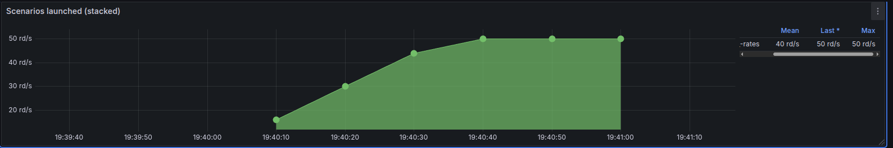
Por la simplicidad del endpoint y dada la falta de parámetros que tiene el mismo, el gráfico representa la evolución a través del tiempo de la cantidad de consultas que son realizadas al endpoint
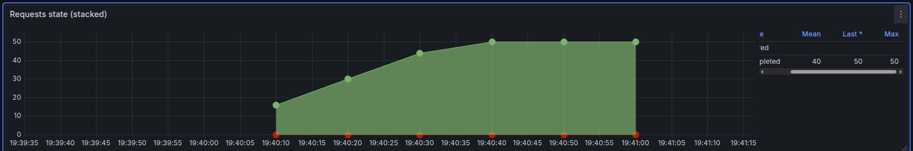
De los datos se puede extraer que en un escenario de baja carga de la API, se observa que la totalidad de las consultas fue contestada de manera satisfactoria
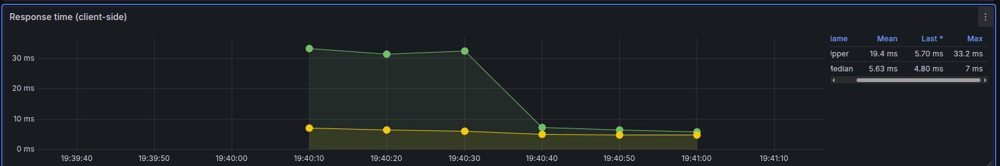
De este gráfico se puede extraer información sobre el tiempo de procesamiento y la latencia existente entre el cliente y la aplicación, debido a ser un escenario de pruebas en este caso la latencia es un valor despreciable, mientras que se puede apreciar la evolución del tiempo de procesamiento y se podría considerar la relación existente entre este y la cantidad de request que se encuentra procesando el servidor en el momento
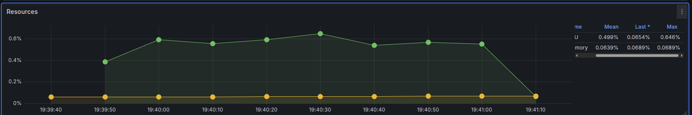
Finalmente la cantidad de recursos del ordenador usadas para procesar las consultas no parece ser representativa, se puede concluir que en escenarios de baja intensidad la API responde de manera eficiente y tanto la performance percibida por el usuario como la disponibilidad no se ven afectados en estos escenarios
5.1.2. Análisis del endpoint putrates
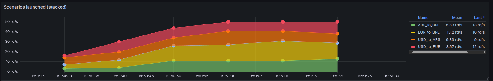
Al tratarse de un método PUT, la variabilidad entre los diferentes tipos de monedas utilizadas se puede usar para ejemplificar el funcionamiento en el test, por lo tanto, se puede apreciar que hay una tendencia a realizar cuatro tipos de transacciones diferentes considerando las distintas monedas
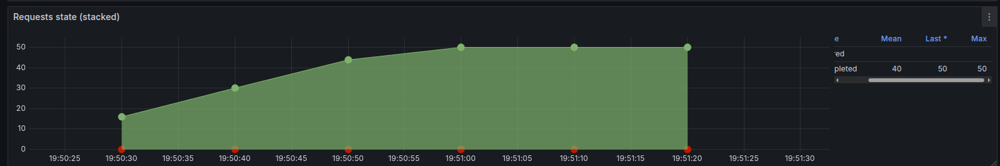
Como en el caso anterior, todas las peticiones al servidor respondieron de manera satisfactoria a los clientes
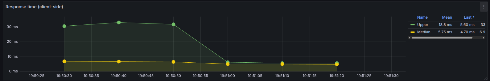
Una vez más se puede apreciar la tendencia a que el uso de recursos (en este caso del CPU) sea más intensivo en el período más temprano en que se realiza el test, es importante aclarar que la recta verde representa los máximos registrados, un valor más parecido al real percibido por el cliente es la media del tiempo de respuesta que también se encuentra en el gráfico
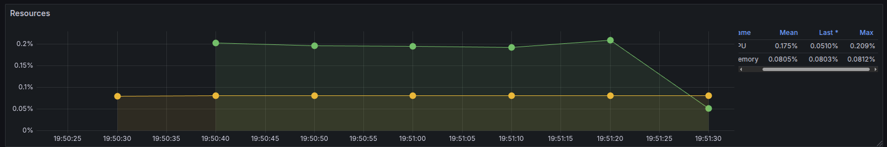
Nuevamente se observa que no existe un uso excesivo de los recursos del ordenador, por lo tanto, en escenarios de baja intensidad el endpoint contesta de manera satisfactoria a las transacciones
5.1.3. Análisis del endpoint exchange
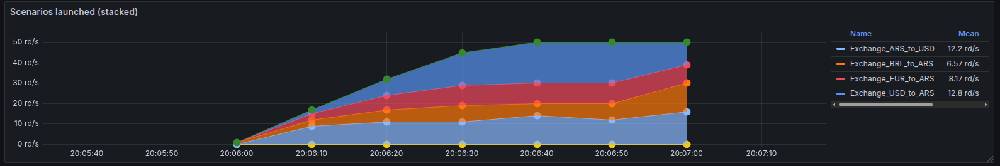
Como en el caso del endpoint anterior, se agrega variabilidad en los escenarios de prueba para simular de manera más realista el escenario de la aplicación que se encuentra en producción, los escenarios están dispuestos que ocurran de manera equiprobable
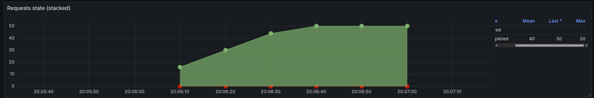
Todos los POST fueron realizados de manera exitosa sin presentar ningún problema en la aplicación
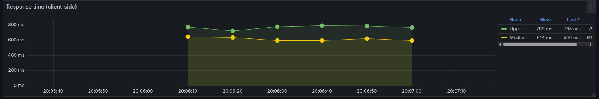
A comparación de los otros endpoints analizados, es evidente que la finalización de esta tarea tiene un orden de magnitud superior a los otros casos, véase que en las pruebas anteriores el máximo de los tiempos de ejecución se encontraba alrededor de los 30 ms mientras que la media se encontraba alrededor de los 20 ms, para este endpoint los tiempos de ejecución se van hasta el rango de los 600 - 800 ms. Esta prueba permite identificar que este endpoint puede ser un posible cuello de botella en un caso de alto volumen de transacciones
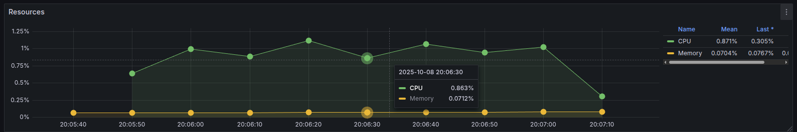
Finalmente observando el uso de los recursos del ordenador, se destaca el uso del CPU, para llevar a cabo este conjunto de operaciones el uso del CPU escaló a casi el 1% de su uso. Con este resultado y el anterior es fácil identificar a este endpoint como uno de los posibles casos a considerar para aplicar estrategias en busca de mejorar la performance, esto, pensando a futuro en escenarios de uso intensivo de la aplicación
Además de la información anteriormente recolectada, para evitar la repetición sobre la evidencia se descarta la presentación de las pruebas para los otros endpoints, puesto que la información recolectada fue similar y no fue concluyente a la hora de determinar nuevas estrategias arquitectónicas que no puedan ser deducidas de los problemas que fueron encontrados anteriormente en el resto de endpoints
5.2. Prueba con carga alta
5.2.1. Análisis del endpoint Rates
Se presentan los datos de pruebas recolectados en un escenario de uso intensivo de la aplicación
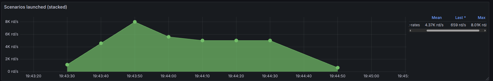 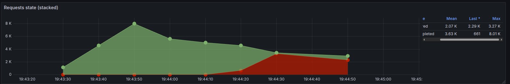 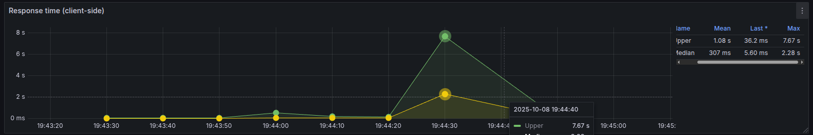 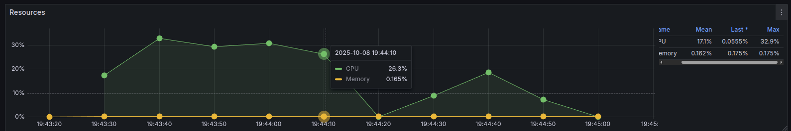
5.2.2. Análisis del endpoint putrates
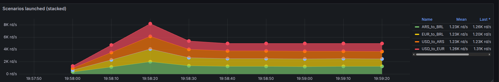 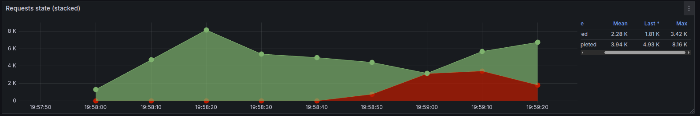 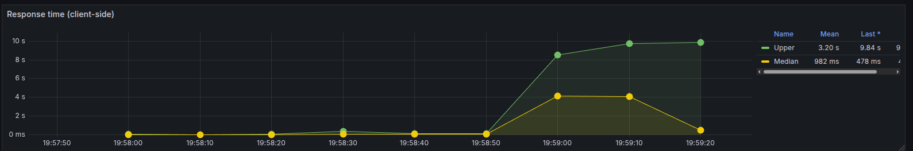 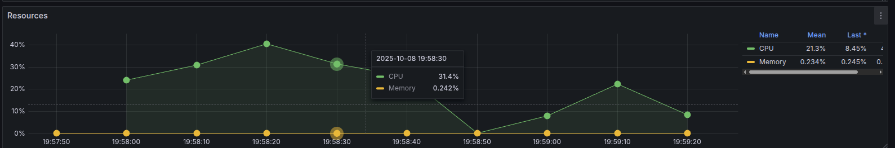
5.2.3. Análisis del endpoint exchange
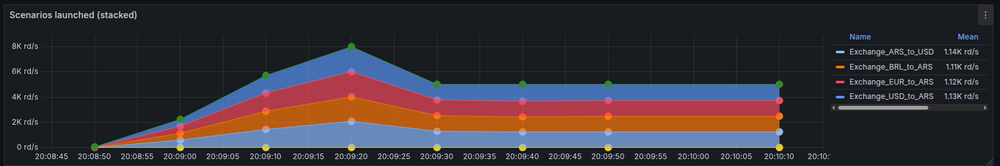 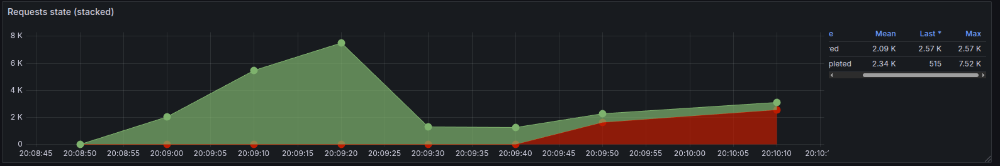 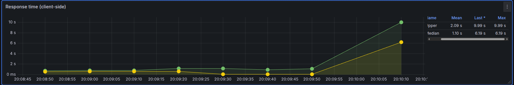 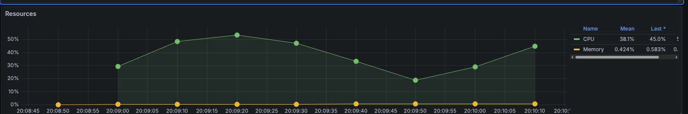
5.2.4. Balanceador de carga
Adicionalmente es interesante observar el consumo de recursos del balanceador de carga que se encuentra trabajando en conjunto con la api. Para cada uno de los escenarios intensivos se agrega la recoleccion de datos sobre el uso de los recursos del computador por parte del balanceador de carga
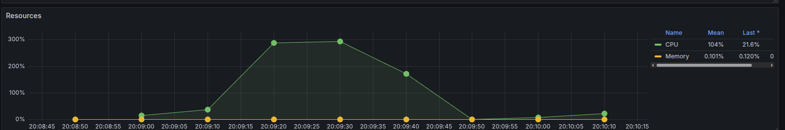 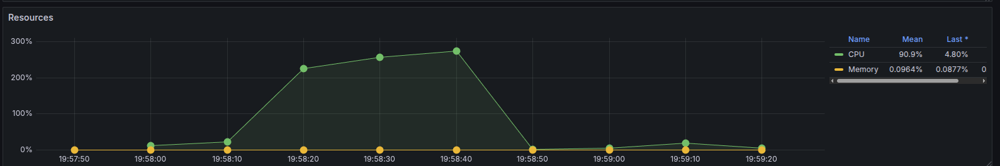
<Revisar en donde iria esto>
6. Resultados - Valkey/Redis
En las propuestas de mejoras se busca principalmente mejorar la experiencia de los usuarios en escenarios de alta carga sobre la aplicación, dadas las conclusiones resultantes de la sección 5, se analizarán la evolución de las propuestas únicamente en escenarios de alta carga para la aplicación.
Se presentan los resultados de haber integrado Valkey en la aplicación:
6.1. Rates
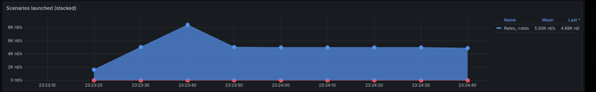 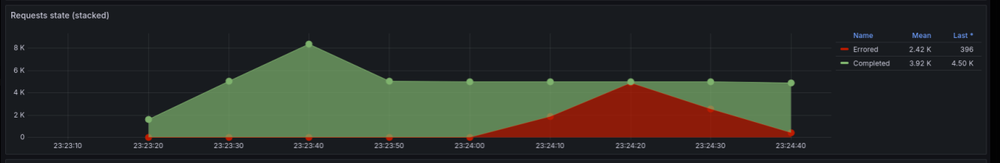 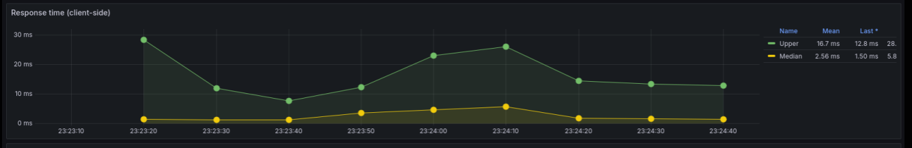 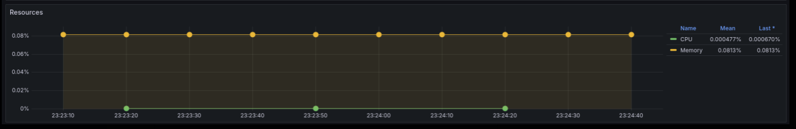
6.2. Exchange
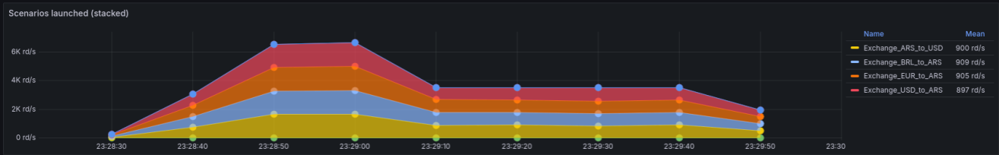 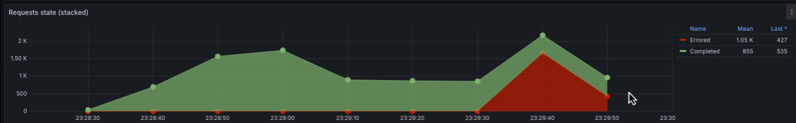 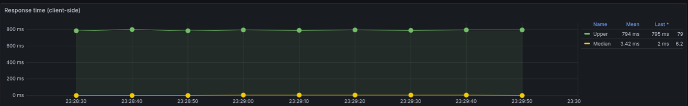 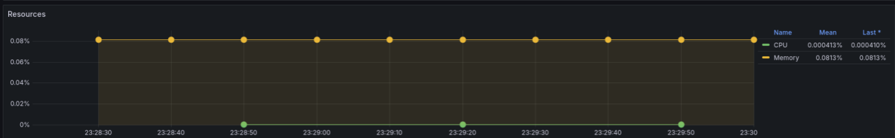
7. Propuestas de mejora
7.1. Implementación de Valkey como persistencia
7.1.1. Táctica aplicada
La implementación utiliza Valkey como almacén de datos centralizado, reemplazando la persistencia en archivos JSON. Los datos se almacenan como claves en Redis:
accounts: Almacena la lista de cuentas de usuario en formato JSON.rates: Contiene las tasas de cambio entre monedas.log: Registra el historial de transacciones realizadas.
El módulo valkey.js proporciona funciones asíncronas para inicializar la conexión (init()), obtener datos (getAccounts(), getRates(), getLog()) y actualizarlos (setAccounts(), setRates(), setLog()). Estas funciones serializan/deserializan los datos a JSON para almacenarlos como strings en Redis.
En exchange.js, se importa y utiliza este módulo para todas las operaciones de persistencia, reemplazando las lecturas/escrituras directas a archivos. La inicialización se realiza al inicio de la aplicación con await valkeyInit().
7.1.2. Configuración
Se agregó un servicio valkey en el docker-compose.yml utilizando la imagen valkey/valkey:8.1.4-alpine, expuesto en el puerto 6379. La aplicación se conecta mediante la variable de entorno VALKEY_URL=redis://valkey:6379.
7.1.3. Beneficios
Al centralizar el estado en Valkey, múltiples instancias de la API pueden compartir el mismo almacén de datos. Esto elimina la dependencia de estado local en memoria o archivos, permitiendo:
- Escalado horizontal sin pérdida de consistencia.
- Persistencia real de los datos, sobreviviente a reinicios de contenedores.
- Operaciones atómicas en Redis para transacciones financieras.
Esta táctica mejora significativamente la Disponibilidad y Escalabilidad, mitigando los puntos únicos de falla relacionados con la persistencia local.

7.2. Implementación de PostgreSQL como persistencia
7.2.1. Táctica aplicada
La implementación utiliza PostgreSQL como almacén de datos relacional, reemplazando la persistencia en archivos JSON y Valkey. Las tablas creadas son:
accounts: Almacena las cuentas de usuario con campos como id, currency, balance, createdat, updatedat, deleted.exchange_rates: Contiene las tasas de cambio entre monedas con basecurrency, countercurrency, rate, updatedat.transactions: Registra el historial de transacciones realizadas, con soporte para atomicidad en operaciones de intercambio.
El módulo databaseAdapter.js proporciona funciones para conectarse a PostgreSQL usando el paquete pg, manejando conexiones y transacciones. Los modelos en models/ (Account, ExchangeRate, Transaction) manejan las operaciones CRUD con soporte para transacciones ACID.
En exchange.js, se utilizan estos modelos para todas las operaciones financieras, incluyendo transacciones atómicas para intercambios que requieren consistencia (ej. actualizar balances y registrar transacción en una sola operación).
7.2.2. Configuración
Se agregó un servicio postgres en el docker-compose.yml utilizando la imagen postgres:15-alpine, con inicialización de la base de datos mediante el script 01-init.sql que crea las tablas, índices y datos iniciales.
Se configuraron tres instancias de la API (api1, api2, api3) conectadas a PostgreSQL, permitiendo escalado horizontal sin pérdida de estado.
Se actualizó nginx_reverse_proxy.conf para balancear carga entre las tres instancias de API utilizando un bloque upstream.
7.2.3. Beneficios
Al centralizar el estado en PostgreSQL con transacciones ACID, múltiples instancias pueden compartir el mismo almacén de datos de forma consistente y atómica. Esto elimina dependencias de estado local, permite escalado horizontal sin pérdida de consistencia, y asegura atomicidad en operaciones financieras críticas, mejorando la integridad de datos.
Esta táctica mejora significativamente la Disponibilidad (reduciendo puntos únicos de falla en persistencia), Escalabilidad (permitiendo más nodos con estado compartido), y Performance (con transacciones eficientes, concurrencia controlada y consultas optimizadas con índices).

7.3. Comparación de estados de requests
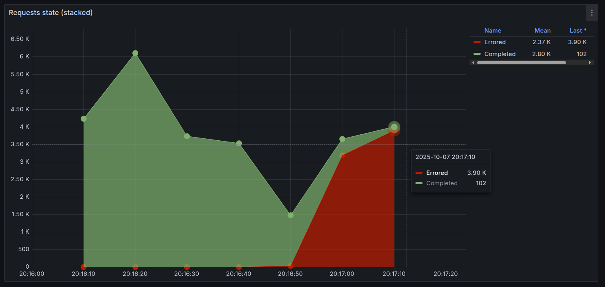
Figura 1: Estado de requests en la arquitectura base
En la arquitectura base, se observa una alta tasa de errores debido a la sobrecarga de la única instancia de la API y problemas de concurrencia en el acceso a archivos JSON locales, lo que resulta en fallos de conexión y respuestas erróneas bajo carga elevada.
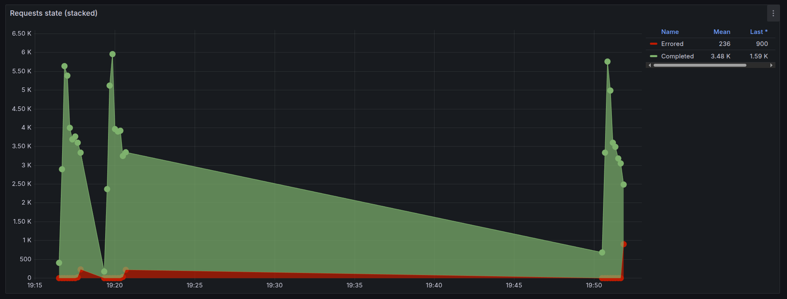
Figura 2: Estado de requests con la propuesta de mejora (PostgreSQL y balanceo de carga)
Con la propuesta de mejora que incluye balanceo de carga entre tres nodos y PostgreSQL como persistencia, la tasa de errores se reduce significativamente. El balanceo de carga distribuye la carga uniformemente entre los nodos, evitando la saturación de un solo punto, mientras que PostgreSQL maneja mejor la concurrencia mediante transacciones ACID y acceso controlado a la base de datos, minimizando errores por conflictos de acceso a datos y mejorando la estabilidad general del sistema.